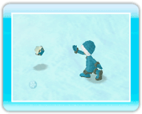

14 |
Objetos y su uso |
 |
Para usar un objeto, apunta al icono del objeto en la esquina inferior izquierda de la pantalla y oprime Nota: Para guardar los objetos oprime Varas de pesca Este objeto te hará saber cuándo hay peces escondidos debajo de la nieve y el hielo. Si te mueves mientras sostienes las varas de pesca, estas se abrirán cuando encuentren un buen lugar para pescar. ・Pesca 
Cuando las varas de pesca se abran, oprime Pez falso Este pequeño pez es redondo y se convierte en una bola de nieve cuando lo arrojas al oprimir 
・Haz una bola de nieve Cuando arrojas un pez falso, se convertirá en una bola de nieve, si te sitúas enseguida de la bola de nieve y mantienes oprimido Nota: Las bolas de nieve se destruyen cuando tocan un obstáculo. Puedes tener hasta tres bolas de nieve al mismo tiempo. Pingüino dorado 
Se trata de una escultura dorada de un pingüino. Después de elegirla con el cursor, oprime Nota: Para remover la escultura dorada, sitúate enseguida de ella y oprime Atún 
El atún es un festín para los pingüinos. Cuando ellos lo miran, ¡se apresuran hacia él y se lo comen! |
 |
 |
 |